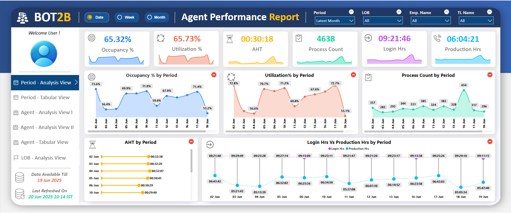
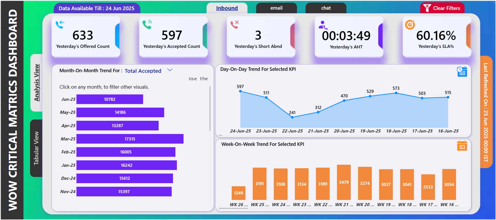
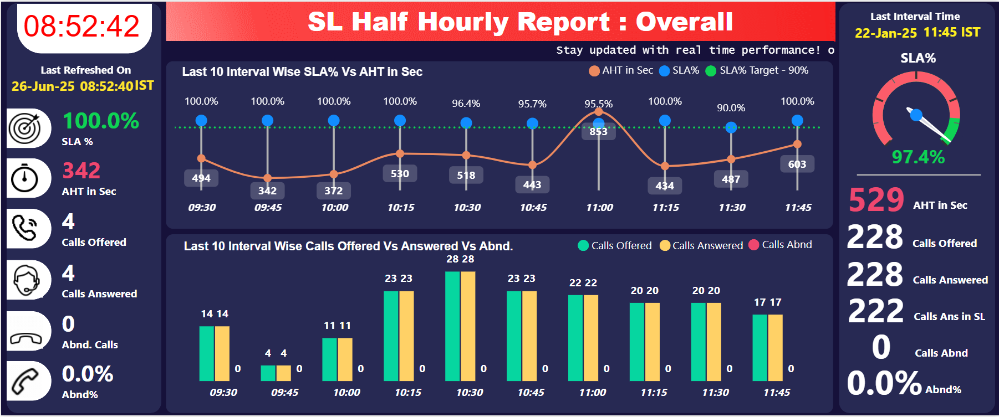
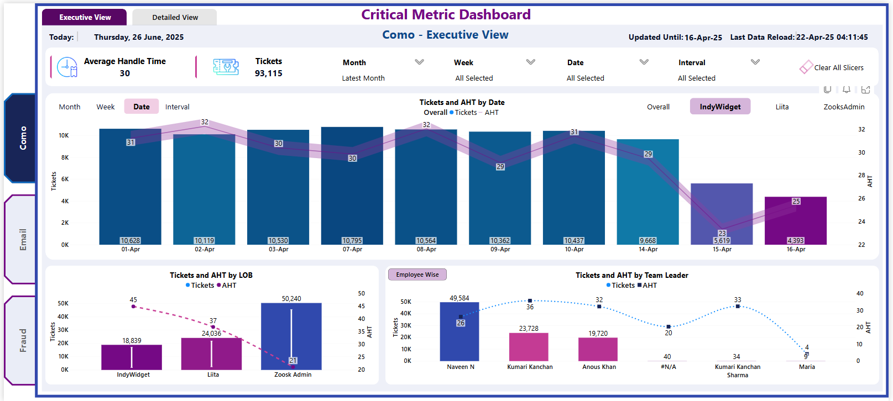
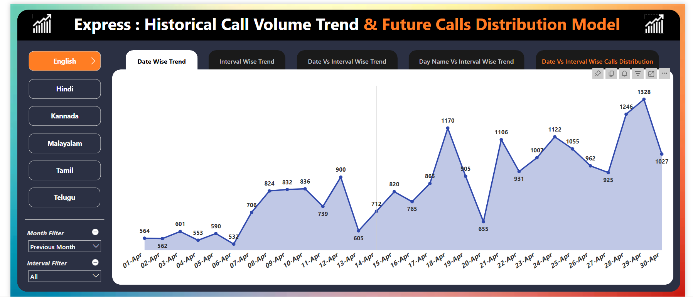
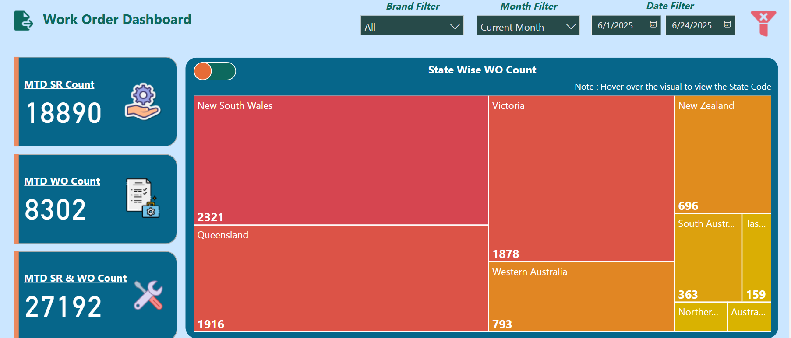
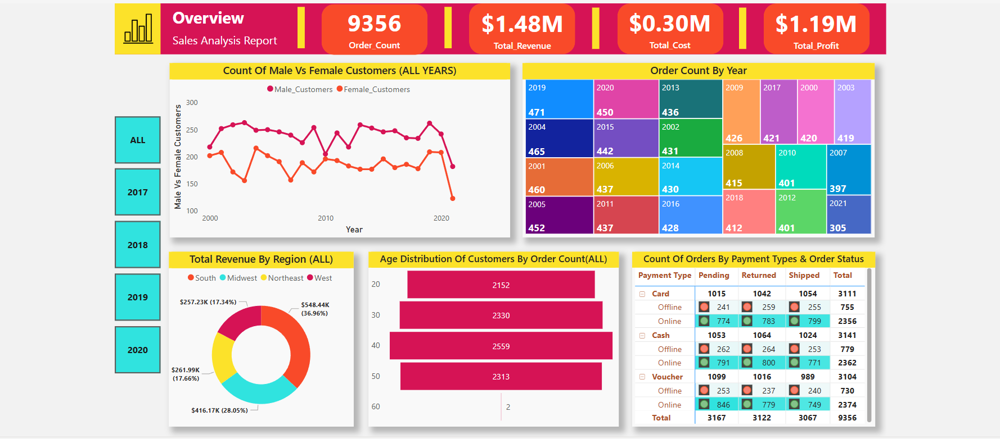
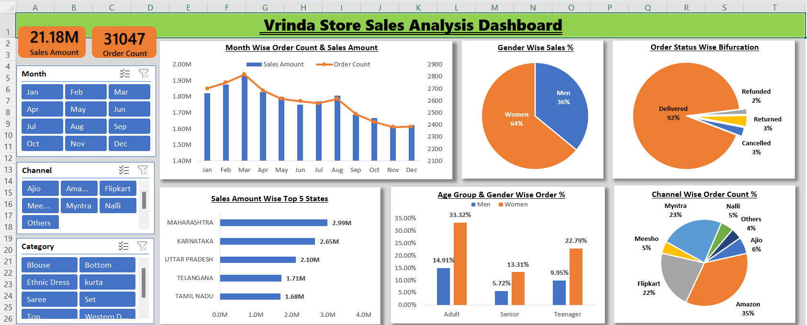

Developed an Agent Performance Report for the support center of a Netherlands based client.
Enabled leadership to easily identify top performers and bottom defaulters.Used RLS technique to
provide an individual agents to only access their own performance.

Developed a Power BI Dashboard to analyze the daily performance of the Australia-based client.
Integrated HTML & SVG visuals into Power BI dashboards, enriching data
presentation with dynamic, interactive elements for an improved user
experience.

Developed a real-time TV View dashboard for a Qatar-based telecom client. Used Direct Query mode
for live database connectivity.Integrated Power Automate to refresh the dataset every 60
seconds.

This dashboard was created to track & analyze the critical KPI's for the Mexico based client.
Implemented UI/UX best practices to refine dashboard aesthetics, improving
usability, responsiveness, and overall look and feel for enhanced user
satisfaction.

This Power BI dashboard, developed for a Qatar-based client, analyzes historical call volume
trends to accurately forecast future call distribution. It demonstrates my ability to deliver
data-driven insights and automated solutions for business operations.

Developed a Power BI dashboard for an Australia-based retail supply chain client to analyze
store complaints. Imported the data into the dashboard by connecting it to the SQL database.

Developed during my Power BI learning journey, this project analyzes historical sales data to
provide comprehensive insights. This dashboard demonstrates my ability to create
dynamic and user-friendly Power BI solutions for business intelligence

Imaginary eCommerece store name "Vrinda" is selling their products online through diffrent
channels like Amazon, Flipkart
etc. They have a sales data of year 2022 & they want us to analyse this data to understand their
customers to grow more sales in 2023.

Dashboard was built to show the season wise summary of the IPL tournament using Microsoft Excel.

The dataset used for this project have the COVID-19 cases recoreded from 24th Feb 2020 to 30th
Apr 2021.

I have build an Python Project to Scrape YouTube data using YouTube Data API.

This is an Capstone Project build using R programming For Google Data Analytics Certification.

Every dataset has a story and this set is pulled from IMDb.com of all the Indian movies on the
platform. I have build the predictive machine learning model using Stochastic Gradient Descent
(SGD) Regressor which is going to predicts the rating of a movie based on the given parameters.